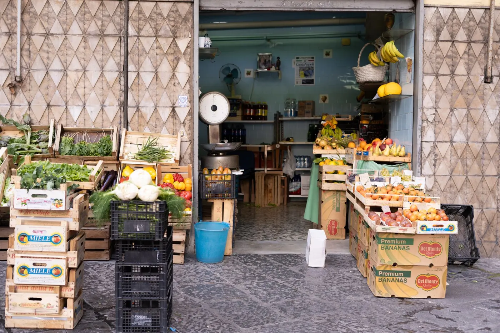
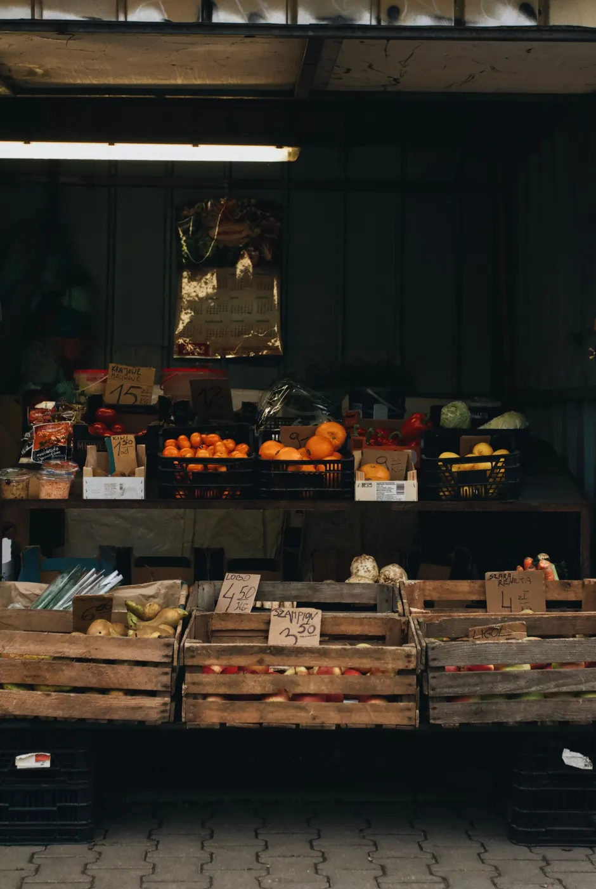
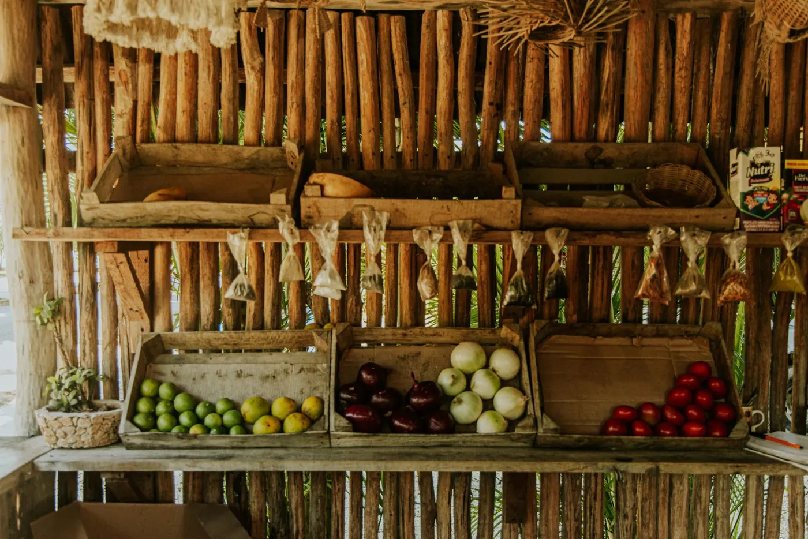
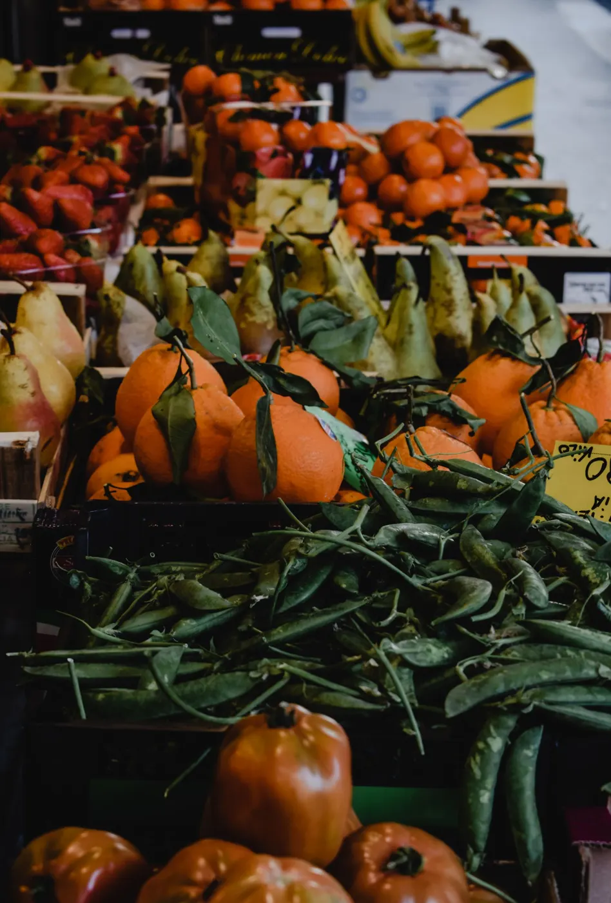

Fruta
Gran variedad.
Avinguda de Vallcarca, 246, 08023 Barcelona ↗
Fruta y verdura en la Avinguda de Vallcarca, abierto también los fines de semana.

Avinguda de Vallcarca · Vallcarca
Gran variedad.
Para el día a día.
Abierto sábado y domingo por la mañana.
Pregunta qué ha llegado hoy.
Horario según la ficha pública; conviene confirmarlo por teléfono.
Las reseñas recientes destacan la variedad de fruta y verdura, los buenos precios y el trato. 13 reseñas con media de 3,8. Resumen neutral de reseñas públicas de Google Maps. Sin citas literales.



Pregúntanos por teléfono o WhatsApp: te contamos lo disponible.
Escríbenos o llama y lo consultamos.
En Avinguda de Vallcarca, 246, 08023 Barcelona.